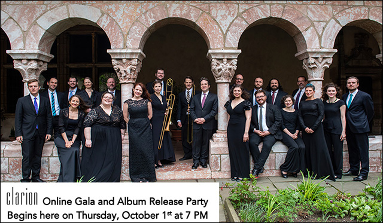
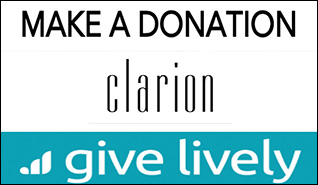

Online gala and album release party
Streaming here live on Thursday, October 1, 2020 at 7:00 PM

Please join us for an online event celebrating the musicians of The Clarion Choir and The Clarion Orchestra as well as our new recording release. The evening will include live performances by Clarion singers and players, as well as a celebration of The Clarion Choir's new album: the world premiere of Kastalsky's Requiem for Fallen Brothers recorded in Washington National Cathedral. There will be an auction and paddle raise to support Clarion as well, so please do join us!